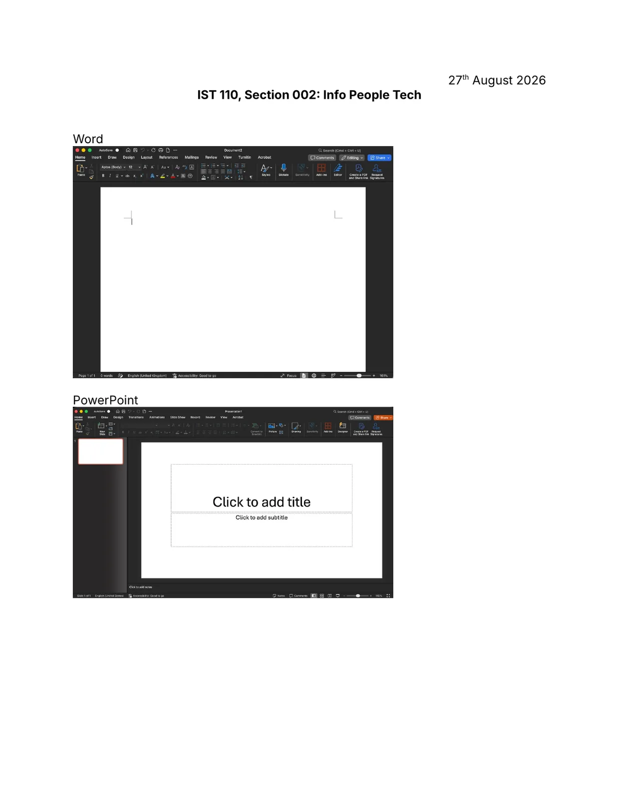
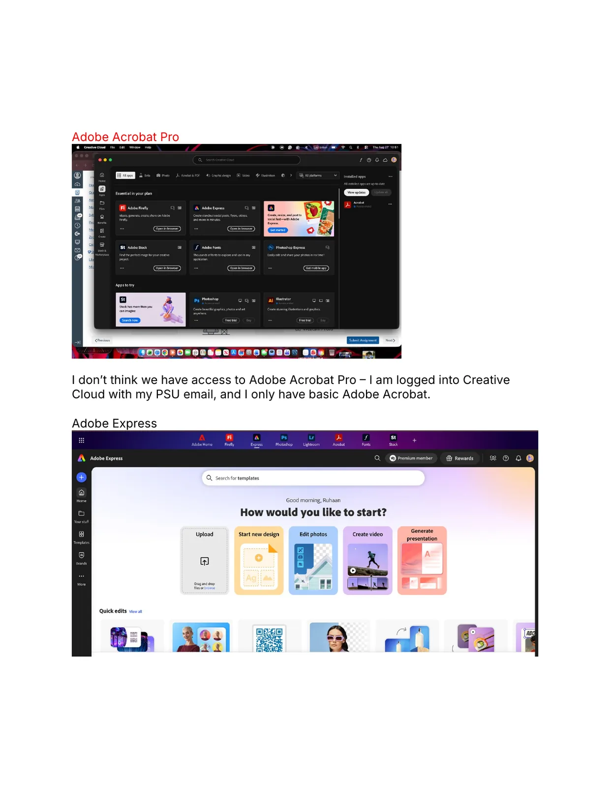

L00 Setting up enterprise software
The task
Install the software Penn State gives students (Word, PowerPoint, Adobe Acrobat Pro and Adobe Express) and put a screenshot of each into a Word document.
What I made
A Word document with screenshots of Word, PowerPoint and Adobe Express open on my laptop. Acrobat Pro didn't appear in my Creative Cloud apps when I signed in with my Penn State account, so I included a screenshot of Creative Cloud instead and noted that I only had the basic version of Acrobat.

See the other 1 page


Download the original (PDF, 2 pages, 362 KB)
Reflection
This felt like admin at the time, but it set up the tools I used for everything after it. As a finance major I already use PowerPoint and Excel all the time, and in IST 110 I went back to them for the hardware dissection deck, the OSINT presentation and plenty of write-ups.
The useful surprise was Acrobat Pro. It didn't appear in Creative Cloud under my Penn State account, so instead of faking a screenshot I recorded that I only had the basic version. It showed me that enterprise software is really about licences: what you can use depends on what your account is entitled to, not just on downloading the app.